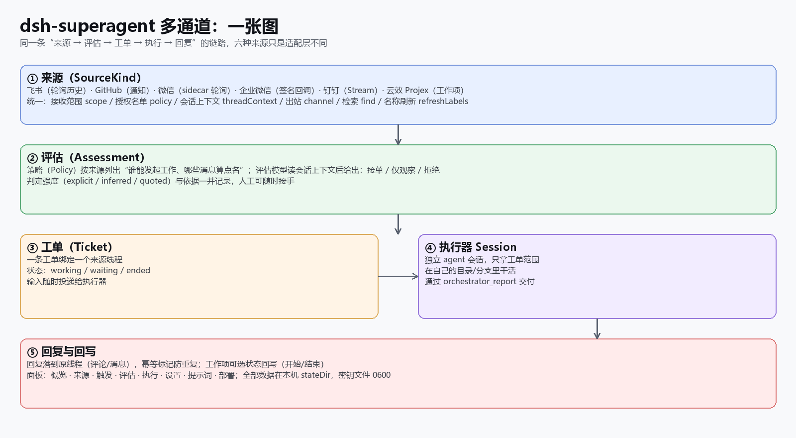
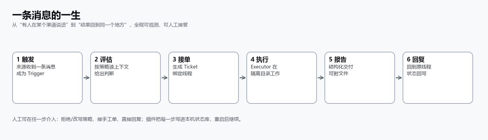
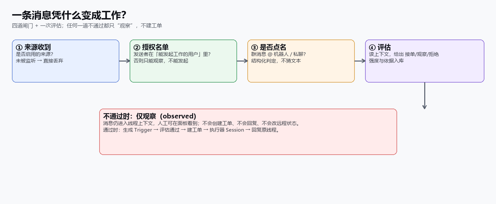
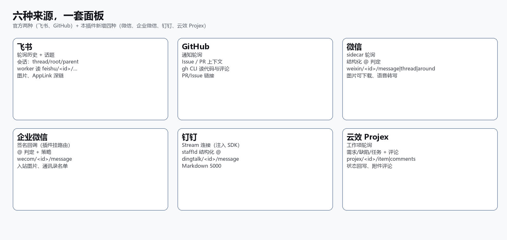
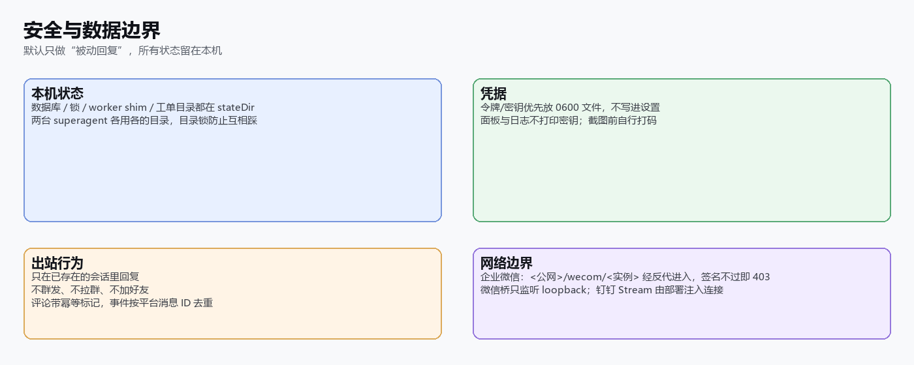
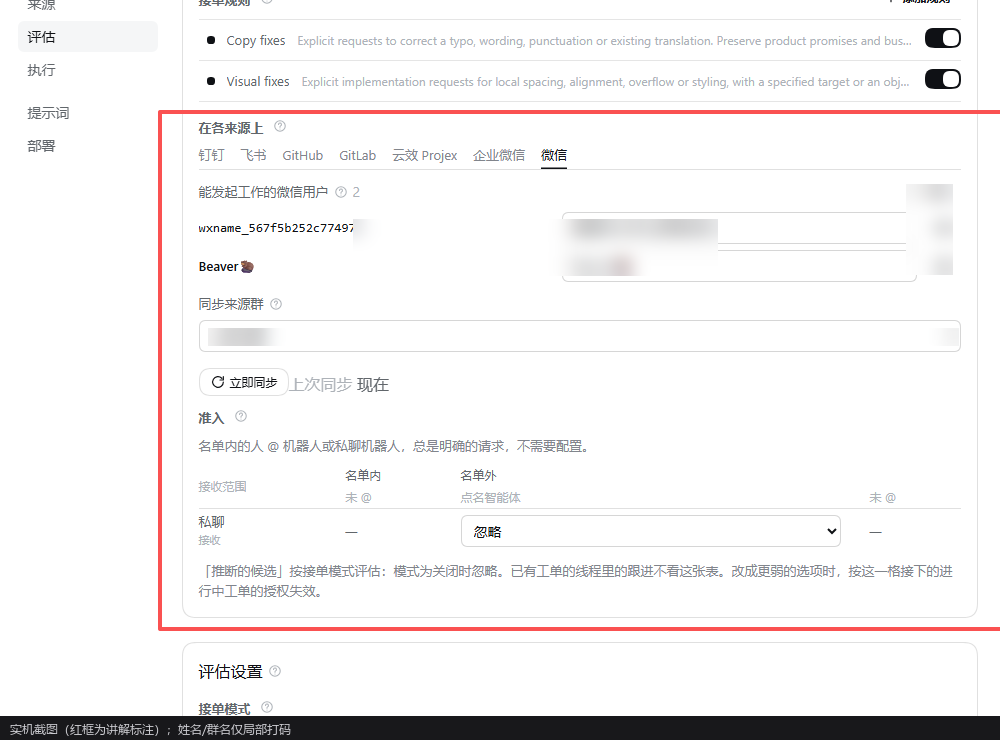
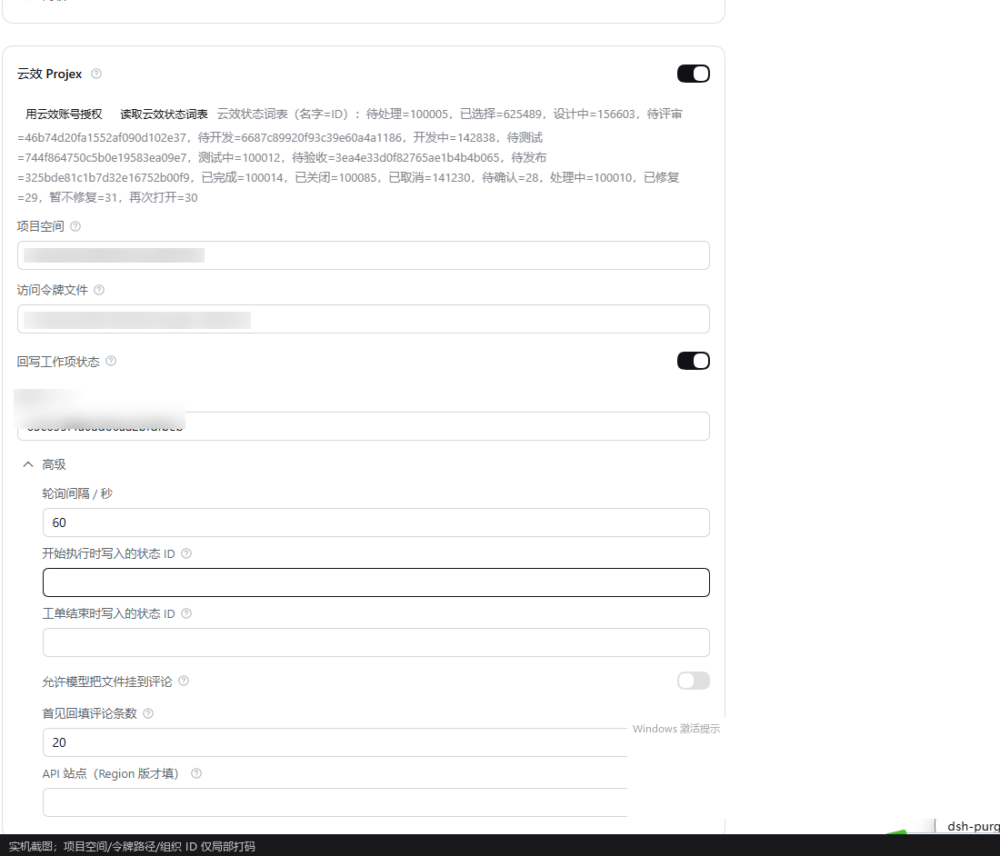
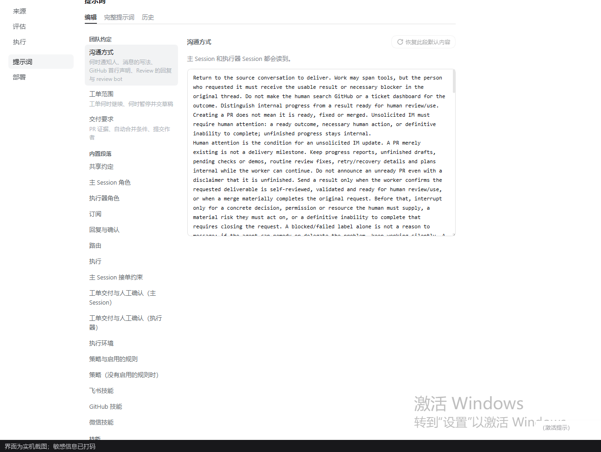
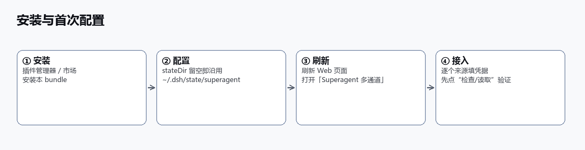

dsh-superagent 多通道 · 文档预览
版本 2.4.0 · 六种来源（飞书 / GitHub / 微信 / 企业微信 / 钉钉 / 云效 Projex）· 实机截图与示意图合集
截图说明
带 panel- 前缀的是实机截图，项目/组织 ID、令牌路径、姓名、群名、会话标题等敏感信息已打码；
其余为按当前实现绘制的示意图。发布前请再核对一遍是否有遗漏的敏感信息。
一张图：一条链路，六种来源

一条消息的一生

凭什么变成工作？

六种来源，一套面板

安全与数据边界

实机截图：评估与策略

实机截图：云效 Projex 来源卡片

实机截图：提示词与技能

安装与首次配置

发布前材料
收录申请草稿与目录 manifest 见 docs/distribution/；能力对照见
docs/extensions/capability-matrix.md。